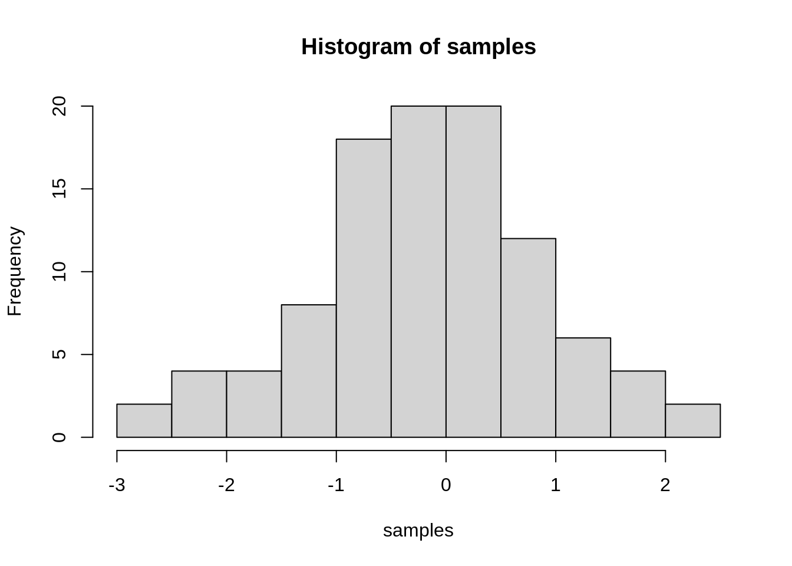

Journal (reproducible report)
Aibar Kobdabayev
2020-11-25
1 Challenge number#1
Last compiled: 2020-11-26
Analyze the sales by location (state) with a bar plot. Since state and city are multiple features (variables), they should be split. Which state has the highes revenue?
1.1 Load libraries:
library(tidyverse)
library(readxl)1.2 Import files:
bikes_tbl <- readxl::read_excel("./00_data/01_bike_sales/01_raw_data/bikes.xlsx")
orderlines_tbl <- readxl::read_excel("./00_data/01_bike_sales/01_raw_data/orderlines.xlsx")
bikeshops_tbl <- readxl::read_excel("./00_data/01_bike_sales/01_raw_data/bikeshops.xlsx")1.3 Examine data for imported tables:
bikeshops_tbl## # A tibble: 30 x 5
## bikeshop.id name location lat lng
## <dbl> <chr> <chr> <dbl> <dbl>
## 1 1 Zum Goldenen Lenker Berlin, Berlin 52.5 13.4
## 2 2 AlexandeRad Hamburg, Hamburg 53.6 10.0
## 3 3 Fahrradladen 16 Munich, Bavaria 48.2 11.6
## 4 4 Bikestation Köln Cologne, North Rhine-Westphalia 50.9 6.95
## 5 5 Montimare Frankfurt, Hesse 50.1 8.68
## 6 6 fahrschneller Stuttgart, Baden-Württemberg 48.8 9.18
## 7 7 Rad Ab Düsseldorf, North Rhine-Westph… 51.2 6.79
## 8 8 Lucky Bike Dortmund, North Rhine-Westphal… 51.5 7.47
## 9 9 Zweirad-Center Stadl… Essen, North Rhine-Westphalia 51.5 7.01
## 10 10 WITT-RAD Bremen, Bremen 53.1 8.83
## # … with 20 more rowsorderlines_tbl## # A tibble: 15,644 x 7
## ...1 order.id order.line order.date customer.id product.id quantity
## <chr> <dbl> <dbl> <dttm> <dbl> <dbl> <dbl>
## 1 1 1 1 2015-01-07 00:00:00 2 2681 1
## 2 2 1 2 2015-01-07 00:00:00 2 2411 1
## 3 3 2 1 2015-01-10 00:00:00 10 2629 1
## 4 4 2 2 2015-01-10 00:00:00 10 2137 1
## 5 5 3 1 2015-01-10 00:00:00 6 2367 1
## 6 6 3 2 2015-01-10 00:00:00 6 1973 1
## 7 7 3 3 2015-01-10 00:00:00 6 2422 1
## 8 8 3 4 2015-01-10 00:00:00 6 2655 1
## 9 9 3 5 2015-01-10 00:00:00 6 2247 1
## 10 10 4 1 2015-01-11 00:00:00 22 2408 1
## # … with 15,634 more rowsbikes_tbl## # A tibble: 231 x 9
## bike.id model model.year frame.material weight price category gender url
## <dbl> <chr> <dbl> <chr> <dbl> <dbl> <chr> <chr> <chr>
## 1 2875 Aeroa… 2020 carbon 7.6 4579 Road - … unisex https:…
## 2 2873 Aeroa… 2020 carbon 7.27 6919 Road - … unisex https:…
## 3 2874 Aeroa… 2020 carbon 7.1 6429 Road - … unisex https:…
## 4 2876 Aeroa… 2020 carbon 7.73 5069 Road - … unisex https:…
## 5 2877 Aeroa… 2020 carbon 7.83 3609 Road - … unisex https:…
## 6 2225 Aeroa… 2019 carbon 6.8 6139 Road - … unisex https:…
## 7 2091 Aeroa… 2019 carbon 6.8 5359 Road - … unisex https:…
## 8 2086 Aeroa… 2021 carbon 7.6 2629 Road - … unisex https:…
## 9 2088 Aeroa… 2020 carbon 7.3 3699 Road - … unisex https:…
## 10 2120 Aeroa… 2020 carbon 7.2 3219 Road - … female https:…
## # … with 221 more rows1.4 Data manipulation. Join tables:
bike_orderlines_joined_tbl <- orderlines_tbl %>%
dplyr::left_join(bikes_tbl, by = c("product.id" = "bike.id")) %>%
dplyr::left_join(bikeshops_tbl, by = c("customer.id" = "bikeshop.id"))
bike_orderlines_joined_tbl %>% glimpse()## Rows: 15,644
## Columns: 19
## $ ...1 <chr> "1", "2", "3", "4", "5", "6", "7", "8", "9", "10", "11…
## $ order.id <dbl> 1, 1, 2, 2, 3, 3, 3, 3, 3, 4, 5, 5, 5, 5, 6, 6, 6, 6, …
## $ order.line <dbl> 1, 2, 1, 2, 1, 2, 3, 4, 5, 1, 1, 2, 3, 4, 1, 2, 3, 4, …
## $ order.date <dttm> 2015-01-07, 2015-01-07, 2015-01-10, 2015-01-10, 2015-…
## $ customer.id <dbl> 2, 2, 10, 10, 6, 6, 6, 6, 6, 22, 8, 8, 8, 8, 16, 16, 1…
## $ product.id <dbl> 2681, 2411, 2629, 2137, 2367, 1973, 2422, 2655, 2247, …
## $ quantity <dbl> 1, 1, 1, 1, 1, 1, 1, 1, 1, 1, 1, 2, 1, 1, 1, 1, 1, 1, …
## $ model <chr> "Spectral CF 7 WMN", "Ultimate CF SLX Disc 8.0 ETAP", …
## $ model.year <dbl> 2021, 2020, 2021, 2019, 2020, 2020, 2020, 2021, 2020, …
## $ frame.material <chr> "carbon", "carbon", "carbon", "carbon", "aluminium", "…
## $ weight <dbl> 13.80, 7.44, 14.06, 8.80, 11.50, 8.80, 8.20, 8.85, 14.…
## $ price <dbl> 3119, 5359, 2729, 1749, 1219, 1359, 2529, 1559, 3899, …
## $ category <chr> "Mountain - Trail - Spectral", "Road - Race - Ultimate…
## $ gender <chr> "female", "unisex", "unisex", "unisex", "unisex", "uni…
## $ url <chr> "https://www.canyon.com/en-de/mountain-bikes/trail-bik…
## $ name <chr> "AlexandeRad", "AlexandeRad", "WITT-RAD", "WITT-RAD", …
## $ location <chr> "Hamburg, Hamburg", "Hamburg, Hamburg", "Bremen, Breme…
## $ lat <dbl> 53.57532, 53.57532, 53.07379, 53.07379, 48.78234, 48.7…
## $ lng <dbl> 10.015340, 10.015340, 8.826754, 8.826754, 9.180819, 9.…1.5 Wrangling data:
bike_orderlines_wrangled_tbl <- bike_orderlines_joined_tbl %>%
tidyr::separate(col = location,
into = c("city", "state"),
sep = ", ") %>%
dplyr::mutate(total_price = price * quantity) %>%
dplyr::select(order.id, contains("order"), city, state, quantity, total_price, everything()) %>%
rename(bikeshop = name) %>%
magrittr::set_names(names(.) %>% stringr::str_replace_all("\\.", "_"))
bike_orderlines_wrangled_tbl## # A tibble: 15,644 x 21
## order_id order_line order_date city state quantity total_price
## <dbl> <dbl> <dttm> <chr> <chr> <dbl> <dbl>
## 1 1 1 2015-01-07 00:00:00 Hamb… Hamb… 1 3119
## 2 1 2 2015-01-07 00:00:00 Hamb… Hamb… 1 5359
## 3 2 1 2015-01-10 00:00:00 Brem… Brem… 1 2729
## 4 2 2 2015-01-10 00:00:00 Brem… Brem… 1 1749
## 5 3 1 2015-01-10 00:00:00 Stut… Bade… 1 1219
## 6 3 2 2015-01-10 00:00:00 Stut… Bade… 1 1359
## 7 3 3 2015-01-10 00:00:00 Stut… Bade… 1 2529
## 8 3 4 2015-01-10 00:00:00 Stut… Bade… 1 1559
## 9 3 5 2015-01-10 00:00:00 Stut… Bade… 1 3899
## 10 4 1 2015-01-11 00:00:00 Augs… Bava… 1 6629
## # … with 15,634 more rows, and 14 more variables: `___1` <chr>,
## # customer_id <dbl>, product_id <dbl>, model <chr>, model_year <dbl>,
## # frame_material <chr>, weight <dbl>, price <dbl>, category <chr>,
## # gender <chr>, url <chr>, bikeshop <chr>, lat <dbl>, lng <dbl>1.6 Business insights
Creating relevant tables and using gglpot2 package for data visualization.
sales_by_states_tbl <- bike_orderlines_wrangled_tbl %>%
select(order_date, total_price, state) %>%
mutate(year = year(order_date)) %>%
group_by(year, state) %>%
summarise(sales = sum(total_price)) %>%
ungroup() %>%
mutate(sales_text = scales::dollar(sales, big.mark = ".",
decimal.mark = ",",
prefix = "",
suffix = " €"))
sales_by_states_tbl## # A tibble: 60 x 4
## year state sales sales_text
## <dbl> <chr> <dbl> <chr>
## 1 2015 Baden-Württemberg 1031924 1.031.924 €
## 2 2015 Bavaria 1301461 1.301.461 €
## 3 2015 Berlin 95853 95.853 €
## 4 2015 Bremen 1395912 1.395.912 €
## 5 2015 Hamburg 423090 423.090 €
## 6 2015 Hesse 308609 308.609 €
## 7 2015 Lower Saxony 584386 584.386 €
## 8 2015 Mecklenburg-Western Pomerania 222003 222.003 €
## 9 2015 North Rhine-Westphalia 3735092 3.735.092 €
## 10 2015 Saxony 238371 238.371 €
## # … with 50 more rowssales_by_states_tbl %>%
ggplot2::ggplot(aes(x = year, y = sales, fill = state)) +
ggplot2::geom_col() +
ggplot2::facet_wrap(~ state) +
ggplot2::scale_y_continuous(labels = scales::dollar_format(big.mark = ".",
decimal.mark = ",",
prefix = "",
suffix = " €")) +
ggplot2::theme(axis.text = element_text(angle = 45, hjust = 1))
ggplot2::labs(title = "Sales by states")## $title
## [1] "Sales by states"
##
## attr(,"class")
## [1] "labels"1.7 Second level header
You can add more headers by adding more hashtags. These won’t be put into the table of contents
1.7.1 third level header
Here’s an even lower level header
2 My second post (note the order)
Last compiled: 2020-11-26
I’m writing this tutorial going from the top down. And, this is how it will be printed. So, notice the second post is second in the list. If you want your most recent post to be at the top, then make a new post starting at the top. If you want the oldest first, do, then keep adding to the bottom
3 Adding R stuff
So far this is just a blog where you can write in plain text and serve your writing to a webpage. One of the main purposes of this lab journal is to record your progress learning R. The reason I am asking you to use this process is because you can both make a website, and a lab journal, and learn R all in R-studio. This makes everything really convenient and in the same place.
So, let’s say you are learning how to make a histogram in R. For example, maybe you want to sample 100 numbers from a normal distribution with mean = 0, and standard deviation = 1, and then you want to plot a histogram. You can do this right here by using an r code block, like this:
samples <- rnorm(100, mean=0, sd=1)
hist(samples)
When you knit this R Markdown document, you will see that the histogram is printed to the page, along with the R code. This document can be set up to hide the R code in the webpage, just delete the comment (hashtag) from the cold folding option in the yaml header up top. For purposes of letting yourself see the code, and me see the code, best to keep it the way that it is. You’ll learn that all of these things and more can be customized in each R code block.